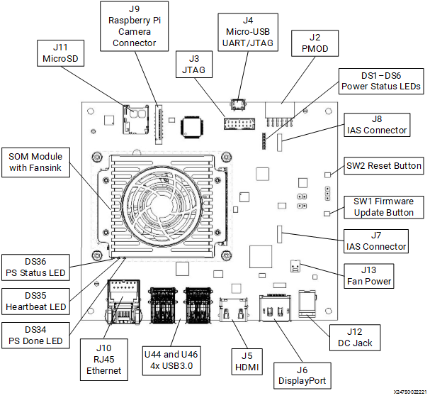

Kria™ KV260 Vision AI Starter Kit Smart Camera Tutorial |
Setting Up the Board and Application Deployment |
Setting Up the Board and Application Deployment¶
Introduction¶
This document describes how to set up the board, and run the smartcam application.
This guide and its prebuilt are targeted for Ubuntu® 22.04 and AMD 2022.1 toolchain. The previous version of this application (on AMD 2021.1 toolchain) targeted to PetaLinux is still available online.
Booting Up Linux¶
Before continuing with the smartcam application specific instructions, if you have not yet done so, boot Linux with the instructions from the Kria Starter Kit Linux boot page.
NOTE: It is recommended that you start the smartcam application using the command line through an universal asynchronous receiver-transmitter (UART), instead of GNOME Desktop.
Application Specific Hardware Setup¶
Besides the hardware configurations required in the Kria Starter Kit Linux boot for booting Linux, the smartcam application requires the following hardware setup:

Monitor:
Before booting, connect a 1080P/4K monitor to the board via either the DP or HDMI port.
A 4K monitor is the preferred option to demonstrate at the maximum supported resolution.
IAS sensor:
Before powering on, install an AR1335 sensor module in J7.
You can also use a USB webcam as an input device.
The webcam is an optional video input device supported in the application.
The recommended webcam is the Logitech BRIO.
Audio Pmod setup as RTSP audio input:
Audio Pmod is an optional audio input and output device. In the current release (22.1 update3), audio is not supported; see Known Issues for details.
In the smartcam application, only RTSP mode uses the audio input function to capture audio. Audio is then sent together with the images as a RTSP stream and can be received at the client side.
To set it up, first install the Pmod to J2, then connect a microphone or any other sound input device to the line input port. A headphone with a microphone will not work—the device needs to be a dedicated input.
The smartcam application does not yet support speakers.
Software Preparation¶
You will use a PC with network access to the board as the RTSP client machine.
Make sure that the PC and the KV260 Vision AI Starter Kit are on the same subnet mask.
On the client machine, to receive and play the RTSP stream, it is recommended that you install FFplay which is part of FFmpeg package.
For Linux, you can install FFmpeg with the package manager of your distribution.
For Windows, you can find install instructions on https://ffmpeg.org/download.html.
Other than FFplay, VLC can also be used to play the RTSP stream, but sometimes it does not work on some client machines, while the FFplay works well.
Downloading and Loading the Application Firmware¶
Get the latest kv260-smartcam firmware package.
Search for the package feed for packages compatible with the KV260.
ubuntu@kria:~$ sudo apt search xlnx-firmware-kv260 Sorting... Done Full Text Search... Done xlnx-firmware-kv260-aibox-reid/jammy 0.1-0xlnx1 arm64 FPGA firmware for Xilinx boards - kv260 aibox-reid application xlnx-firmware-kv260-benchmark-b4096/jammy 0.1-0xlnx1 arm64 FPGA firmware for Xilinx boards - kv260 benchmark-b4096 application xlnx-firmware-kv260-defect-detect/jammy 0.1-0xlnx1 arm64 FPGA firmware for Xilinx boards - kv260 defect-detect application xlnx-firmware-kv260-nlp-smartvision/jammy,now 0.1-0xlnx1 arm64 FPGA firmware for Xilinx boards - kv260 nlp-smartvision application xlnx-firmware-kv260-smartcam/jammy 0.1-0xlnx1 arm64 [installed] FPGA firmware for Xilinx boards - kv260 smartcam application
Install the firmware binaries.
sudo apt install xlnx-firmware-kv260-smartcam
Dynamically load the application package.
The firmware consist of a bitstream and device tree overlay (dtbo) file. The firmware is loaded dynamically on user request once Linux is fully booted. The xmutil utility can be used for that purpose.
Disable the desktop environment.
sudo xmutil desktop_disable
NOTE: Executing
xmutil desktop_disablewill cause the monitor to go blank. Use any serial terminal to continue issuing the Linux commands via port J4, and do not rely completely on the desktop environment.After running the application, the desktop environment can be enabled again with the following command:
sudo xmutil desktop_enable
After installing the firmware, execute xmutil listapps to verify that it is captured under the listapps function and to have dfx-mgrd rescan and register all accelerators in the firmware directory tree.
sudo xmutil listapps
Switch to a different platform for a different application.
When there is already another accelerator/firmware being activated, unload it first, then switch to the kv260-smartcam application.
sudo xmutil unloadapp sudo xmutil loadapp kv260-smartcam
Docker-Based Application Preparation¶
Pull the 2022.1 Docker image for smartcam using the following command:
docker pull xilinx/smartcam:2022.1
The storage volume on the SD card can be limited with multiple Dockers. If there are space issues, you can use following command to remove the existing container:
docker rmi --force <other containers>
You can find the images installed with the following command:
docker images
Launch the Docker using the follwowing command:
docker run \ --env="DISPLAY" \ -h "xlnx-docker" \ --env="XDG_SESSION_TYPE" \ --net=host \ --privileged \ --volume="$HOME/.Xauthority:/root/.Xauthority:rw" \ -v /tmp:/tmp \ -v /dev:/dev \ -v /sys:/sys \ -v /etc/vart.conf:/etc/vart.conf \ -v /lib/firmware/xilinx:/lib/firmware/xilinx \ -v /run:/run \ -it xilinx/smartcam:2022.1 bash
It will launch the smartcam image in a new container.
root@xlnx-docker/#
Get the demo video files suitable for the application:
To demonstrate the function of the application in case you have no MIPI and USB camera in hand, the file video source is also supported.
You can download video files from the following links, which are in MP4 format:
Then, you need to transcode it to the H264 file which is one supported input format.
ffmpeg -i input-video.mp4 -c:v libx264 -pix_fmt nv12 -vf scale=1920:1080 -r 30 output.nv12.h264
Finally, upload or copy these transcoded H264 files to the board (by using scp, ftp, or copy them onto the SD card and find them in
/boot/firmware/), place it to somewhere under/tmp, which will mapped to /tmp in the Docker container too.
Run the Application¶
There are two ways to interact with the application.
Jupyter Notebook¶
You need to run the following command to install the package shipped notebooks, which reside in
/opt/xilinx/kv260-smartcam/share/notebooks, to the folder/root/notebooks/smartcam:$ smartcam-install.pyThis script also provides more options to install the current application notebook to a specified location.
usage: smartcam-install [-h] [-d DIR] [-f] Script to copy smartcam Jupyter notebook to user directory optional arguments: -h, --help show this help message and exit -d DIR, --dir DIR Install the Jupyter notebook to the specified directory. -f, --force Force to install the Jupyter notebook even if the destination directory exists.To launch the Jupyter Notebook on the target, run the following command:
jupyter-lab --notebook-dir=/root/notebooks/smartcam --allow-root --ip=ip-address & // fill in ip-address from ifconfig, eth0
Output example:
[I 2022-09-05 10:26:26.644 LabApp] JupyterLab extension loaded from /usr/local/lib/python3.10/dist-packages/jupyterlab [I 2022-09-05 10:26:26.644 LabApp] JupyterLab application directory is /usr/local/share/jupyter/lab [I 2022-09-05 10:26:26.664 ServerApp] jupyterlab | extension was successfully loaded. [I 2022-09-05 10:26:26.683 ServerApp] nbclassic | extension was successfully loaded. [I 2022-09-05 10:26:26.685 ServerApp] Serving notebooks from local directory: /root/notebooks/smartcam [I 2022-09-05 10:26:26.685 ServerApp] Jupyter Server 1.18.1 is running at: [I 2022-09-05 10:26:26.685 ServerApp] http://192.168.1.233:8888/lab?token=385858bbf1e5541dbba08d811bcac67d805b051ef37c6211 [I 2022-09-05 10:26:26.686 ServerApp] or http://127.0.0.1:8888/lab?token=385858bbf1e5541dbba08d811bcac67d805b051ef37c6211 [I 2022-09-05 10:26:26.686 ServerApp] Use Control-C to stop this server and shut down all kernels (twice to skip confirmation). [W 2022-09-05 10:26:26.702 ServerApp] No web browser found: could not locate runnable browser. [C 2022-09-05 10:26:26.703 ServerApp] To access the server, open this file in a browser: file:///root/.local/share/jupyter/runtime/jpserver-40-open.html Or copy and paste one of these URLs: http://192.168.1.233:8888/lab?token=385858bbf1e5541dbba08d811bcac67d805b051ef37c6211 or http://127.0.0.1:8888/lab?token=385858bbf1e5541dbba08d811bcac67d805b051ef37c6211
You can access the server by opening the server URL from the previous steps with a Chrome browser.
In the notebook, the GStreamer pipeline string is constructed; you can get it by adding simple python code to print it out and played with gst-launch-1.0 command in the console, and there are some user options variables that can be changed and run with. For other parts of the pipeline, you can also change and play to see the effect easily.
Command Line¶
These allow you to define different video input and output device targets using the smartcam application. Execute using the UART/debug interface.
Example Scripts¶
The following example scripts and options definitions are provided.
Refer to File Structure to find the file locations.
Click here to view the example script usage
MIPI RTSP server:
Invoking
"bash 01.mipi-rtsp.sh"will start the RTSP server for the MIPI captured images.The script accepts ${width} ${height} as the first and second parameter; the default is 1920 x 1080.
Running the script will display a message in the following form:
stream ready at:
rtsp://boardip:port/test
Run “ffplay rtsp://boardip:port/test” on the client PC to receive the rtsp stream.
Checking:
You should be able to see the images the camera is capturing on the FFplay window, and when there is a face captured by the camera, there should be blue box drawn around the face, and the box should follow the movement of the face.
MIPI DP display:
Make sure the monitor is connected as described here.
Invoking
"bash 02.mipi-dp.sh"will play the captured video with the detection results on the monitor.The script accepts ${width} ${height} as the first and second parameter; the default is 1920 x 1080.
Checking:
You should be able to see the images the camera is capturing on the monitor connected to the board, and when there is a face captured by the camera, there should be blue box drawn around the face, and the box should follow the movement of the face.
File to File
Invoking
"bash 03.file-file.sh".Take the first argument passed to this script as the path to the H264 video file (you can use the demo video for face detection or similar videos), perform face detection, generate video with detection bbox, and save as
./out.h264.Checking:
Play the input video file and generated video file,
./out.h264, with any media player you prefer, that is, VLC or FFPlay. You should be able to see in the output video file, there are blue boxes around the faces of people, and the boxes should follow the movement of the faces, while there are no such boxes with the input video file.
File to DP
Invoking
"bash 04.file-ssd-dp.sh".Take the first argument passed to this script as the path to the H264 video file (you can use the demo video for ADAS SSD or similar videos), perform vehicles detection and generate video with detection bbox, and display onto monitor
Checking:
You should be able to see a video of a highway driving with the detection of the vehicles in a bounding box.
Additional Configuration Options for the smartcam Invocation¶
The example scripts and Jupyter Notebook work as examples to show the capability of the smartcam application for specific configurations. More combinations could be made based on the options provided by the smartcam application. You can get detailed application options by invoking smartcam --help.
Usage¶
smartcam [OPTION?] - Application for face detection on the SOM board of Xilinx.
Help Options:
-h, --help Show help options
--help-all Show all help options
--help-gst Show GStreamer Options
Application Options:
-m, --mipi= Use the MIPI camera as input source, auto detect, fail if no MIPI. available.
-u, --usb=media_ID USB camera video device id ( for example, 2 for /dev/video2)
-f, --file=file Path location of the h26x file as the input.
-i, --infile-type=h264 Input file type: [h264 | h265]
-W, --width=1920 Resolution w of the input.
-H, --height=1080 Resolution h of the input.
-r, --framerate=30 Framerate of the input.
-t, --target=dp [dp|rtsp|file]
-o, --outmedia-type=h264 Output file type: [h264 | h265].
-p, --port=5000 Port to listen on (default: 5000).
-a, --aitask Select the AI task to be run: [facedetect|ssd|refinedet].
-n, --nodet No AI inference.
-A, --audio RTSP with I2S audio input.
-R, --report Report fps
-s, --screenfps Display fps on the screen. Notic this will cause perfermance degradation.
--ROI-off turn off ROI (Region-of-Interest)
--control-rate=low-latency Encoder parameter control-rate
Supported value:
((0): disable (1): variable (2): constant
(2130706434): capped-variable
(2130706433): low-latency)
--target-bitrate=3000 Encoder parameter target-bitrate
--gop-length=60 Encoder parameter gop-length
--profile Encoder parameter profile.
Default: h264: constrained-baseline; h264: main
Supported value:
(H264: constrained-baseline, baseline, main, high, high-10, high-4:2:2, high-10-intra, high-4:2:2-intra
H265: main, main-intra, main-10, main-10-intra, main-422-10, main-422-10-intra)
--level Encoder parameter level
Default: 4
Supported value:
(4, 4.1, 5, 5.1, 5.2)
--tier Encoder parameter tier
Default: main
Supported value:
(main, high)
--encodeEnhancedParam String for fully customizing the encoder in the form "param1=val1, param2=val2,...", where paramn is the name of the encoder parameter
For detailed info about the parameter name and value range, just run gst-inspect-1.0 omxh264enc / gst-inspect-1.0 omxh265enc based on the encoding type selected by option "--outmedia-type", the parameter could be any of the listed parameters except "control-rate, target-bitrate, gop-length" which have dedicated options as above.
Examples of supported combinations sorted by input are outlined below¶
If using the command line to invoke the smartcam application, stop the process via CTRL + C prior to starting the next instance.
MIPI Input (IAS sensor input):
Input file (file on file system):
NOTE: You must update the command to the specific file desired as the input source.
Output: RTSP
smartcam --file ./test.h264 -i h264 -W 1920 -H 1080 -r 30 --target rtsp
Output: DP
smartcam --file ./test.h264 -i h264 -W 1920 -H 1080 -r 30 --target dp
Output: file
smartcam --file ./test.h264 -i h264 -W 1920 -H 1080 -r 30 --target file
NOTE: The output file is
./out.h264.
Input USB (USB webcam):
NOTE: You must ensure the width/height/framerate defined are supported by your USB camera.
Output: RTSP
smartcam --usb 1 -W 1920 -H 1080 -r 30 --target rtsp
output: DP
smartcam --usb 1 -W 1920 -H 1080 -r 30 --target dp
Output: file
smartcam --usb 1 -W 1920 -H 1080 -r 30 --target file
NOTE: The output file is
./out.h264.
Files Structure of the Application¶
The application is installed as follows.
Binary File Directory:
/opt/xilinx/kv260-smartcam/bin
| Filename | Description |
|---|---|
| smartcam | main app |
| Filename | Description |
|---|---|
| 01.mipi-rtsp.sh | Call smartcam to run facedetction and send out rtsp stream. |
| 02.mipi-dp.sh | Call smartcam to run facedetction and display on DP display. |
| 03.file-file.sh | Call smartcam to run facedetction and display on input h264/5 file and generate output h264/5 with detection boxes. |
| 04.file-ssd-dp.sh | Call smartcam to run ssd, process the input h264/5 file, and display the results with detection boxes DP display. |
Configuration File Directory:
/opt/xilinx/kv260-smartcam/share/vvas/${AITASK}AITASK = “facedetect” | “refinedet” | “ssd”
| Filename | Description |
|---|---|
| preprocess.json | Config of preprocess for AI inference |
| aiinference.json | Config of AI inference (facedetect|refinedet|ssd) |
| drawresult.json | Config of boundbox drawing |
Model files: =>
/opt/xilinx/kv260-smartcam/share/vitis_ai_library/models
The model files integrated in the application use the B3136 DPU configuration.
| Foldername | Description |
|---|---|
| densebox_640_360 | Model files for facedetcet |
| refinedet_pruned_0_96 | Model files for refinedet |
| ssd_adas_pruned_0_95 | Model files for ssd |
Jupyter Notebook file: =>
/opt/xilinx/kv260-smartcam/share/notebooks/
| Filename | Description |
|---|---|
| smartcam.ipynb | Jupyter Notebook file for MIPI/USB --> DP/RTSP demo. |
Next Steps¶
Go back to the KV260 SOM Smart Camera Design Start Page.
Copyright © 2021-2024 Advanced Micro Devices, Inc